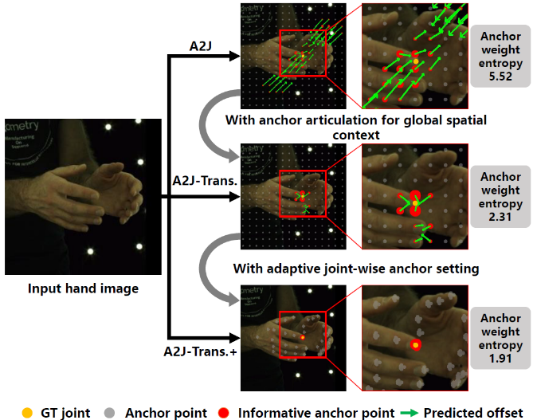
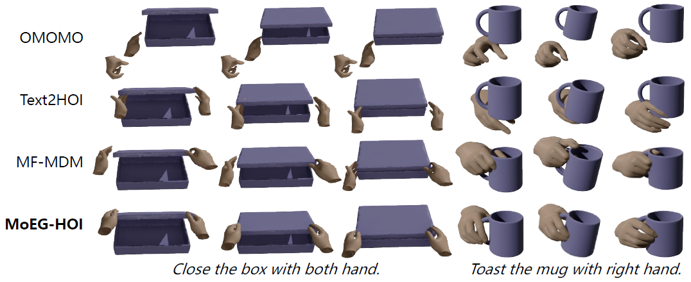
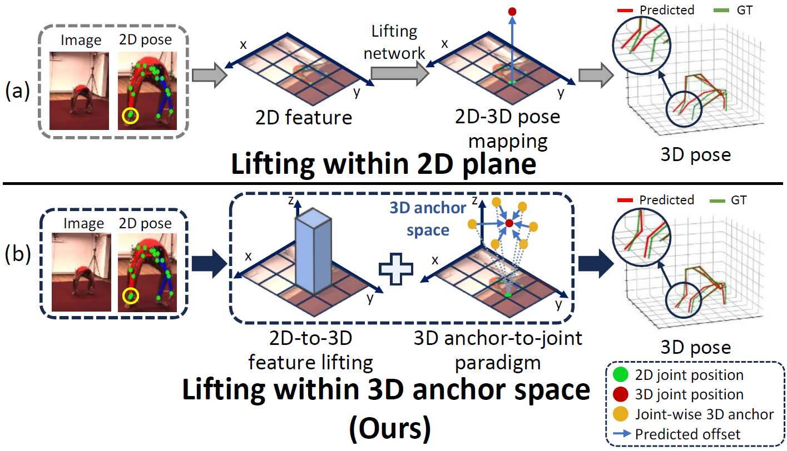
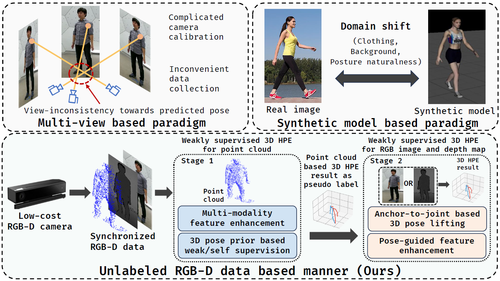
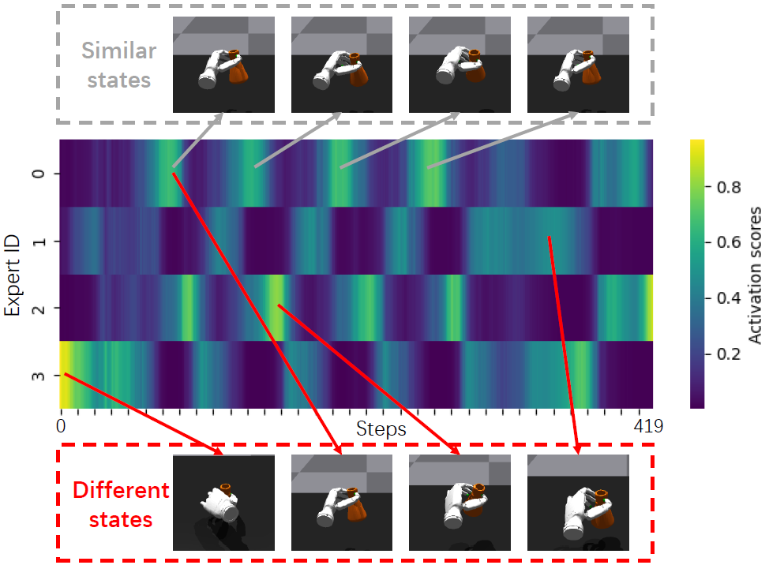
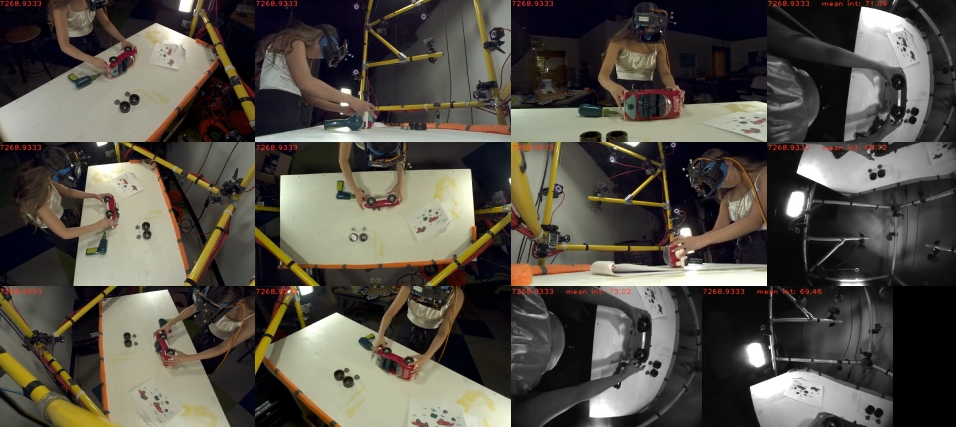
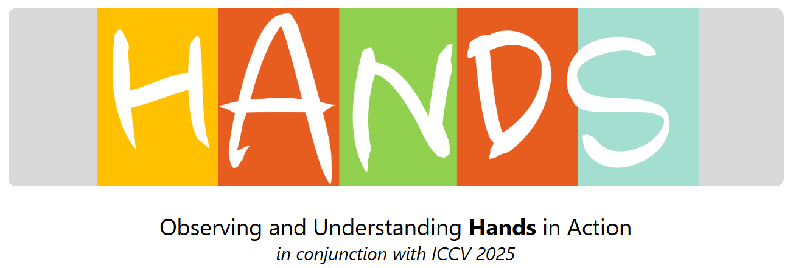
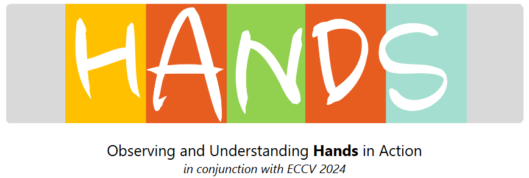
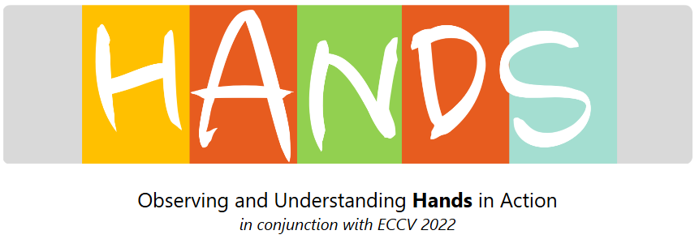

|
Changlong Jiang 姜昌龙 I am a Ph.D. student at the Department of Artificial Intelligence and Automation, Huazhong University of Science and Technology (HUST), advised by Prof. Yang Xiao. Before that, I received my bachelor's degree from HUST. I was born in Tai'an, Shandong, a beautiful historical and cultural city at the foot of Mount Tai. My research interests include computer vision and pattern recognition. Currently, I mainly focus on Pose Estimation, Embodied AI, Hand-Object Interaction, Hand Motion Generation, and Hand Pose Tracking. |
{kind=link}
Publications |
|
 |
3D Hand Pose Estimation via Articulated
Anchor-to-Joint 3D Local Regressors
Changlong Jiang, Yang Xiao#, Jinghong Zheng, Haohong Kuang, Cunlin Wu, Mingyang Zhang, Zhiguo Cao, Min Du, Joey Tianyi Zhou, and Junsong Yuan (#: corresponding author) IEEE Transactions on Pattern Analysis and Machine Intelligence (IEEE TPAMI), 2026 paper / project / code |
|
 |
MoEG-HOI: Mixture of Expert Groups for One-Stage Hand-Object Interaction
Motion Generation with Hand-Finger-Joint Semantic Guidance
Hang Xu, Yang Xiao#, Changlong Jiang, Haohong Kuang, Kaidi Zhang, Min Du, and Ran Wang, (#: corresponding author) The 40th Annual AAAI Conference on Artificial Intelligence (AAAI), 2026 paper / code |
|
 |
PandaPose:
3D Human Pose Lifting from a Single Image via
Propagating 2D Pose Prior to 3D Anchor Space
Jinghong Zheng, Changlong Jiang, Yang Xiao#, Jiaqi Li, Haohong Kuang, Hang Xu, Ran Wang, Zhiguo Cao, Min Du, and Joey Tianyi Zhou (#: corresponding author) 39th Conference on Neural Information Processing Systems (NeurIPS), 2025 paper / code / poster |
|
 |
UniPose: Unified Cross-modality Pose Prior
Propagation towards RGB-D data for Weakly
Supervised 3D Human Pose Estimation
Jinghong Zheng, Changlong Jiang#, Jiaqi Li, Haohong Kuang, Hang Xu, and Tingbing Yan (#: corresponding author) Pattern Recognition and Computer Vision (PRCV), 2025 paper / arxiv |
|
 |
Technical Report of HCB-Hand Team for Dexterous HO Tracker Challenge on
HANDS 2025 Challenge
Hang Xu, Yang Xiao# Changlong Jiang, Haohong Kuang, Yangfan Deng Qihang Zhou, Ran Wang, Min Du, Zhiwen Fang, Zhiguo Cao, and Joey Tianyi Zhou (#: corresponding author) International Conference on Computer Vision (ICCV) Workshop , 2025 paper / challenge-page |
|
 |
Technical report of HCB team for Multiview Egocentric Hand Tracking
Challenge on HANDS 2024 Challenge
Haohong Kuang, Yang Xiao# Changlong Jiang, Jinghong Zheng, Hang Xu, Ran Wang, Zhiguo Cao, Min Du, Zhiwen Fang, and Joey Tianyi Zhou (#: corresponding author) The 18th European Conference on Computer Vision (ECCV) Workshop , 2024 paper / challenge-page |

|
Anchor-to-Joint Transformer Network for 3D Interacting Hand Pose Estimation from a Single RGB Image
Changlong Jiang, Yang Xiao#, Cunlin Wu, Mingyang Zhang, Jinghong Zheng, Zhiguo Cao, and Joey Tianyi Zhou (#: corresponding author) IEEE/CVF Conference on Computer Vision and Pattern Recognition (CVPR), 2023 paper / code / video / poster |
{kind=link}
Competitions |
|
 |
Observing and Understanding Hands in Action (HANDS), ICCV 2025
Challenge: Tracking Dexterous Hand-Object Manipulation from Human Demonstration Result: Obtain 1st place and first prize. paper / challenge-page |
|
 |
Observing and Understanding Hands in Action (HANDS), ECCV 2024
Challenge: Multiview Egocentric Hand Tracking Challenge (MegoTrack) Result: Obtain 1st place and first prize. paper / challenge-page |
|
 |
Observing and Understanding Hands in Action (HANDS), ECCV 2022
Challenge: Semi/Self-supervised Two-hands 3D Pose Estimation. Result: Obtain 1st place and first prize. paper / challenge-page |
|
The "Challenge Cup" National Competition, 2023
Topic: Driver Monitoring System (DMS). Result: Winning the Grand Prize (top prize beyond First Prize). |
|
|
|
The Mathematical Contest In Modeling (MCM), America, 2020
Topic: Comprehensive exploration of buyer reviews and ratings for Amazon e-commerce products. Result: Obtain Meritorious Winner (9%). |
Selected Honors & Scholarships
|
|
This website is inspired by Jon Barron's website and Wenzheng Zeng's website . Many thanks to them! |